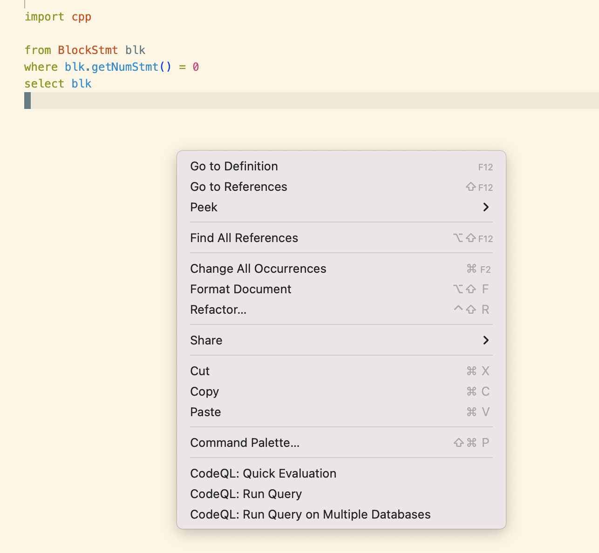

Kernel Bug Hunting
It is generally the case that the barriers to finding and exploiting are getting higher. But there is good news also. In this chapter we describe how to use an automated approach to finding vulnerabilities in the XNU kernel.
Basic Concepts
The GitHub site provides a service which statically analyses code for known coding errors and bad practices, security being a subset of such analysis rules. The underlying tool chain, called CodeQL, provides the mechanism where a structured rule can be used to parse the syntax tree of a compiled program.
In this chapter we show how the XNU kernel and be compiled, and from this a database can be constructed. Then CodeQL queries can be run against it to automatically find bad practices and security sensitive issues.
Sample Visualization
Before we get into the details of what we are setting up, let's jump into what we can expect to end up with. We will go into the details of setup and configuration in a later section, but it makes more sense to first understand the approach and benefits we shall gain from using CodeQL.
We can either run a specific rule, to find code references that match the rule, or we can run a batch of queries given a set of rules.
Specific rule approach
We start with checking for code which has an if-clause but then has an empty block of C++ code that is invoked when the condition matches. For example:
if (ret == ERROR_NOT_ALLOWED)
{
// No code in here. e.g. missing error handling code?
}
When looking for such data, our overall Visual Studio Code setup will look like:
The workflow is to select a snippet to query for. Here we picked one that looks for empty blocks:
Then we right-click to get the context menu and select the "Run Query" option:

Lastly, we inspect the matched source code files:
Batch Queries
If we update the workspace file vscode-codeql-starter.code-workspace to first have increased querying capability:
"settings": {
"omnisharp.autoStart": false,
"codeQL.runningQueries.maxQueries": 128
}
then we can Right Click on a directory level to run all the .ql files underneath. We can for example select the
vscode-codeql-starter/ql/cpp/ql/src/Security/CWE directory and then run all the Security-related queries. This takes
a few minutes on a powerful Mac. But it is still quicker than a manual inspection!
Unfortunately, as of xnu-8792.61.2 there are no matches for any of the 64 rules underneath Security/CWE.
This is probably because Apple, or perhaps a third-party collaborator, has been running CodeQL as part of a Continuous Integration pipeline.
Nevertheless, as we have shown, an empty block in the code might allude to a missing error handling case. So the less interesting rules might turn up security vulnerabilities or give us ideas for how to write a new rule. These private rules would not be part of the CI test set that Apple run. So there is a real opportunity to find new weaknesses or helpful bugs.
Outline of Approach
In this section we give a high level overview of how our toolchain is setup.
Here we've made some assumptions and choices on configuration and setup which we hope can be adapted for your requirements and preferences.
We assume our bug hunting is done with:
- Apple Silicon ARM architecture
- Visual Studio is our editor for querying for, and viewing, results
- XNU Kernel
xnu-8792.61.2is being studied
The top level steps are:
- Setup for Xcode on Mac on Apple Silicon.
- Install the Kernel Debug Kit.
- Obtain download and compilation scripts.
- Setup and install Visual Studio Code, and the QL plug-in.
- Load the Starter Workspace for CodeQL.
- Install CodeQL engine
- Generate XNU CodeQL database.
- Import XNU CodeQL database.
- Run CodeQL queries to find weaknesses and vulnerabilities.
Software Requirements
We need the following software:
| Name | Purpose | Location |
|---|---|---|
| Xcode | Compiler | Mac App Store |
| Kernel Debug Kit (13.1 22C65) | XNU Dependency for compilation | Apple Download Site |
xnu-build |
Build Scripts for XNU | pwn0rz/xnu-build |
| Visual Studio Code | Editor/Viewer | Microsoft VS Code |
| CodeQL plug-in | Integration for CodeQL into VS Code | From Extensions in VS Code; search for CodeQL |
| CodeQL snippets | Pre-made queries to run | Starter Workspace |
| CodeQL CLI | CodeQL engine binaries | Releases |
Install the Apple Proprietary base software
We assume that as standard, you have installed Xcode on your Apple Silicon Mac.
Here we use Xcode 14.1.
In order for the CodeQL engine to run, we also need Command Line Tools for Xcode and Rosetta 2.
Install Command Line Tools from Apple Download Site by searching for "Command Line Tools". Install the edition that matches our installed Xcode version, 14.1.
Rosetta 2 is installed upon demand the first time a tool (such as CodeQL) requires it. But it is possible to put it in place beforehand with the command
/usr/sbin/softwareupdate --install-rosetta --agree-to-license
Then resources needed in order to compile the XNU kernel are provided by the Kernel Debug Kit. The kernel evolves rapidly over time, and particularly after a new product release, a bulk update can often been seen in the XNU sources. There is a tight coupling between the version of the KDK and the XNU kernel that is compiled using it. Expect to have to do hacks and tweaks if this document is being read sometime after the versions we specify here.
To get the currently most recent KDK, visit the Apple Download Site and search for "Kernel Debug Kit". Specifically we use 13.1 build 22C65 in this tutorial.
Once the KDK is downloaded and installed, it will be present on your machine, and can be confirmed using:
mdfind .kdk
/Library/Apple/System/Library/Receipts/com.apple.pkg.KDK.22C65.bom
/Library/Apple/System/Library/Receipts/com.apple.pkg.KDK.22C65.plist
/Library/Developer/KDKs/KDK_13.1_22C65.kdk
Note that in an earlier chapter, we used the KDK because we wanted to actually do Kernel Debugging. Here, we use KDK only to facilitate XNU kernel compilation.
It is worthwhile, whilst we are here, to look inside the KDK subdirectories because it is like Polyfilla (TM). It has many binary components that fill gaps in the open source XNU in order to make a complete system. This would either be to hide details of Apple-custom hardware, or avoid third party intellectual property issues preventing Apple from releasing the source code.
Build XNU kernel
Installing all the prerequisite software modules that the XNU kernel requires, as well as patching up small differences needed due to our compilation being done outside of Apple (and thus not using their internal SDK) is non-trivial. Fortunately the heavy-lifting has already been done by pwn0rz with repository pwn0rz/xnu-build. In this tutorial we are using it at commit 6b5c72cfb5a9a9ad8b5e9e245dbd00f331d37259.
- Clone the repository pwn0rz/xnu-build.
- Ensure a modern Python is present on your system, e.g. Python 3.10.8
- Run the script that fetches and compiles the source code
cd xnu-build ./x.py > x-py-output.txt 2>x-py-err.txt
It is worthwhile trying to exactly match the software being used here to see it working in at least one configuration. Then on later versions of the XNU kernel, some idea of what "normal" looks like is already in mind, and iterative debugging can be done to get the kernel to compile. There is no single long term solution here since the XNU source code is kind of "thrown over the wall" to the community. It is not a project which comes associated with a governance and community leadership aspect from Apple. To be fair, we should be grateful that it even exists.
In our case, our case, out compile never completely succeeds. But it is not really a problem because the above configuration gets us what we require - a set of intermediate binary objects that then can be explored and inspected with CodeQL later along.
Our output files can be cross-compared from The Road to Zero GitHub, in directory examples/compile_xnu.
Setup Visual Studio Code
We assume you have setup Visual Studio Code, Microsoft VS Code When running this tool, with the "Activity Bar" on the left visible, or Shift+Command+X, the extensions panel can be raised. Search for extension "CodeQL" (the author is GitHub and should be the first match). Then install it.
At this point we have a CodeQL extension installed, but no actual CodeQL engine (called the CodeQL CLI) that it can call.
Furthermore, CodeQL needs two more items to be effective. Firstly it needs rules (a ruleset) that it can execute to find code weaknesses and bugs. Secondly, it needs a database file that indexes the code base it should search within.
In order to get the ruleset, recursively clone the repository Starter Workspace
git clone --recursive https://github.com/github/vscode-codeql-starter
Identify the location of the checked out file, vscode-codeql-starter.code-workspace from the above repository.
In Visual Studio Code, choose "File -> Open Workspace From File..." and select the above workspace file.
Install CodeQL CLI
The engine that runs CodeQL is called the CodeQL CLI. These are offered as binaries. In order for our configuration to work we require Xcode command-line developer tools and Rosetta 2 are installed. These were installed earlier.
Download the CodeQL CLI via the release binaries. Here we are using codeql-osx64.zip version 2.11.6. The latest version is at CodeQL Releases
Place the downloaded codeql into a place which is reachable by your shell PATH variable. E.g. for zsh users it would be:
mkdir -p ~/tools
mv ~/Downloads/codeql ~/tools
echo "PATH=$PATH:~/tools" >> ~/.zprofile
. ~/.zprofile
and check the installed command:
~ codeql --version
CodeQL command-line toolchain release 2.11.6.
Copyright (C) 2019-2022 GitHub, Inc.
Unpacked in: /Users/faisalm/tools/codeql
Analysis results depend critically on separately distributed query and
extractor modules. To list modules that are visible to the toolchain,
use 'codeql resolve qlpacks' and 'codeql resolve languages'.
Create the XNU CodeQL Database
At this point we can go back to our xnu-build repository and run its second shell script.
. ~/.zprofile # Just in case we have not picked up codeql in the PATH yet
./ql.py > ql-py-output.txt 2> ql-py-err.txt
Our output files can be cross-compared from The Road to Zero GitHub, in directory examples/codeql_database_generation.
Make a note of the newly created directory, xnu-codeql because this is referenced in a later step.
Import the XNU CodeQL Database
From the Left Hand panel of Visual Studio Code, click the Dots menu and select CodeQL to show it.
From here we can "Add a CodeQL Database from a folder". We pick the xnu-codeql folder we generated in the previous section. (It will be a subdirectory of xnu-build.)
When this is done we see that the CPP (C++) database xnu-codeql is seen with a tick mark in the Left Panel section marked "DATABASES".
Run a Query
We now need to switch our view from the CodeQL plug-in view to the normal folders view.
As a consequence of the recursive clone made for the starter project earlier, we should have a folder called ql as seen in the above screenshot.
We need to drill down into ql/cpp/ql/src/Security/CWE/CWE-014 to find a directory showing some sample code, and a .ql file for finding such examples. Right Clicking on MemsetMayBeDeleted.ql and selecting "Run Query" will execute the query against our database, which is the XNU kernel.
Unfortunately it will not result in any matches because the code does not have such a flaw.
Run a Batch of Queries
We can select at a folder level and choose to run a batch of queries. The CodeQL tool will find all .ql files in the file hierarchy and run each in turn. For example Right Clicking on ql/cpp/ql/src/Likely Bugs/Memory Management will run memory management checks. Unfortunately again, there are no matched returned results because the source base does not have such flaws.
As we mentioned in our earlier section, there can be query limits we reach. These limits can be extended.
We need to update the workspace file vscode-codeql-starter.code-workspace to support for example 128 queries (instead of the default 64):
"settings": {
"omnisharp.autoStart": false,
"codeQL.runningQueries.maxQueries": 128
}
Next Steps
We have shown a powerful tool that can be used to inspect the XNU kernel source, and shown how we can get the source code and compile it.
What remains is to explore the CodeQL query language, and make novel queries.
We could draw inspiration from past bug fixes to see if other instances are present by crafting a query that would match the past bug fix.
Alternatively we could run some of the "noise" queries, such as the empty block query we presented earlier in this chapter. This can lead to insights and further refinement to get a good query that could find a flaw.